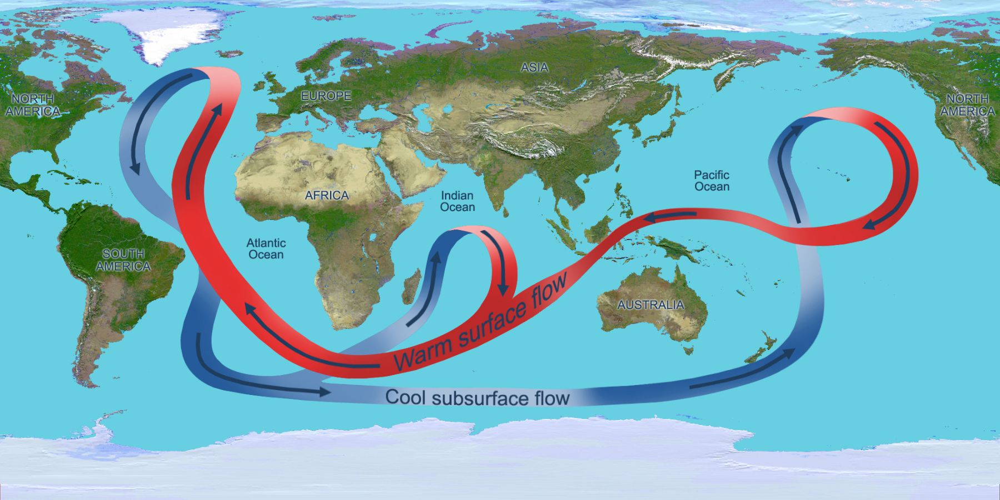
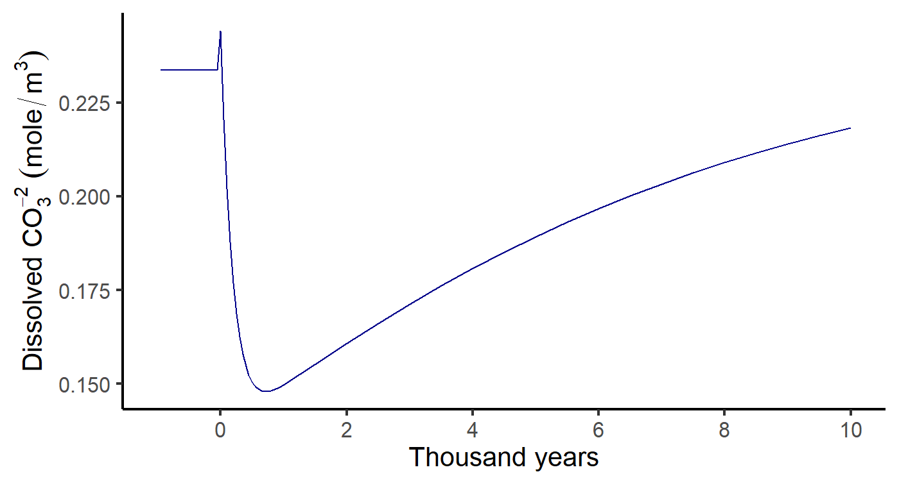

\[
\begin{array}{ccll}
\COO + \water & \rightleftharpoons & \carbonic & \text{(carbonic acid)} \\
\carbonic & \rightleftharpoons & \mathrm{H}^{+} + \bicarb & \text{(bicarbonate)} \\
\bicarb & \rightleftharpoons & \mathrm{H}^{+} + \carb & \text{(carbonate)}
\end{array}
\]
\[
\begin{array}{ccll}
\COO + \water & \rightleftharpoons & \carbonic & \text{(carbonic acid)} \\
\carbonic & \rightleftharpoons & \mathrm{H}^{+} + \bicarb & \text{(bicarbonate)} \\
\bicarb & \rightleftharpoons & \mathrm{H}^{+} + \carb & \text{(carbonate)}
\end{array}
\]
Add the three reactions
\[\require{cancel} \begin{aligned} {\color{black}\COO} + {\color{black}\water} & \rightleftharpoons {\color{darkgreen}\carbonic}\\ {\color{darkgreen}\carbonic} & \rightleftharpoons {\color{blue}\Hplus} + {\color{darkred}\bicarb}\\ {\color{blue}\Hplus} + {\color{purple}\carb} & \rightleftharpoons {\color{darkred}\bicarb} \end{aligned}\]
to get
\[\begin{split} {\color{black}\COO} + {\color{black}\water} {}&{} + {\color{darkgreen}\carbonic} + {\color{blue}\Hplus} + {\color{purple}\carb} \\ & \rightleftharpoons {\color{darkgreen}\carbonic} + {\color{blue}\Hplus} + 2 {\color{darkred}\bicarb} \end{split} \]
Add the three reactions
\[\begin{aligned} {\color{black}\COO} + {\color{black}\water} & \rightleftharpoons {\color{darkgreen}\carbonic}\\ {\color{darkgreen}\carbonic} & \rightleftharpoons {\color{blue}\Hplus} + {\color{darkred}\bicarb}\\ {\color{blue}\Hplus} + {\color{purple}\carb} & \rightleftharpoons {\color{darkred}\bicarb} \end{aligned} \]
to get
\[\def\scancel#1{\rlap{\smash{\cancel{#1}}}\phantom{#1}} \begin{split} {\color{black}\COO} + {\color{black}\water} {}&{} + {\color{darkgreen}\scancel\carbonic} + {\color{blue}\scancel\Hplus} + {\color{purple}\carb} \\ & \rightleftharpoons {\color{darkgreen}\scancel\carbonic} + {\color{blue}\scancel\Hplus} + 2 {\color{darkred}\bicarb}\\ \end{split}\]
Add the three reactions
\[\begin{aligned} {\color{black}\COO} + {\color{black}\water} & \rightleftharpoons {\color{darkgreen}\carbonic}\\ {\color{darkgreen}\carbonic} & \rightleftharpoons {\color{blue}\Hplus} + {\color{darkred}\bicarb}\\ {\color{blue}\Hplus} + {\color{purple}\carb} & \rightleftharpoons {\color{darkred}\bicarb} \end{aligned}\]
to get
\[\begin{split} {\color{black}\COO} + {\color{black}\water} {}&{} + {}\phantom{{\color{darkgreen}\carbonic} + {\color{blue}\Hplus}} + {\color{purple}\carb}\\ & \rightleftharpoons \phantom{{\color{darkgreen}\carbonic} + {\color{blue}\Hplus} + {}} 2 {\color{darkred}\bicarb} \end{split} \]
Add the three reactions
\[\begin{aligned} {\color{black}\COO} + {\color{black}\water} & \rightleftharpoons {\color{darkgreen}\carbonic}\\ {\color{darkgreen}\carbonic} & \rightleftharpoons {\color{blue}\Hplus} + {\color{darkred}\bicarb}\\ {\color{blue}\Hplus} + {\color{purple}\carb} & \rightleftharpoons {\color{darkred}\bicarb} \end{aligned}\]
to get
\[\begin{aligned} {\color{black}\COO} + {\color{black}\water} + {\color{purple}\carb} & \rightleftharpoons 2 {\color{darkred}\bicarb} \end{aligned} \]
Now \({\color{black}\Hplus}\) doesn’t matter.
\[{\color{black}\COO} + {\color{black}\water} + {\color{purple}\carb} \rightleftharpoons \color{darkred}{2 \bicarb}\]


|
|
|
Transition CO2 spike”\(\COO\) is balance of volcanic outgassing
and chemical weathering
As long as outgassing is constant,
weathering acts as thermostat.
Earth’s temperature has been
remarkably stable over time.
Change of volcanic outgassing
changes “setting” of thermostat.